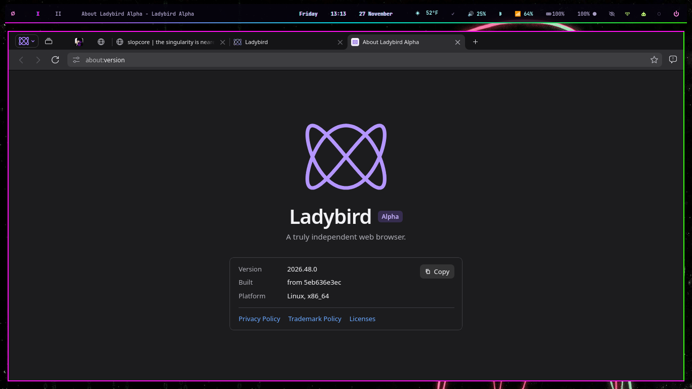
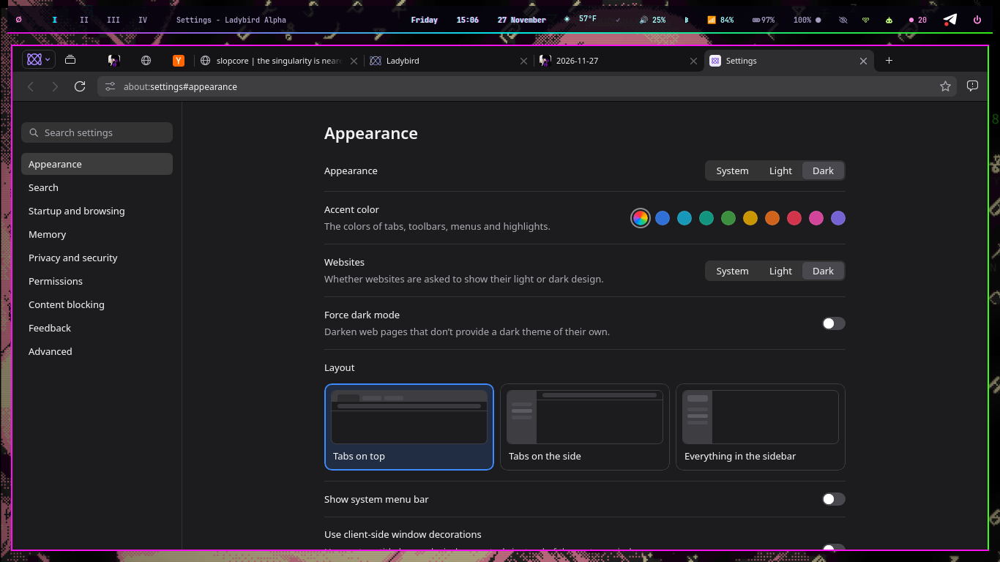
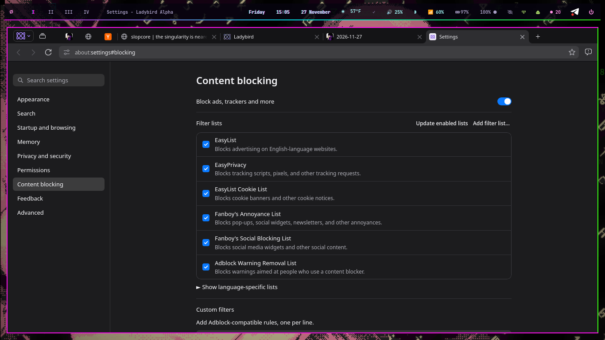
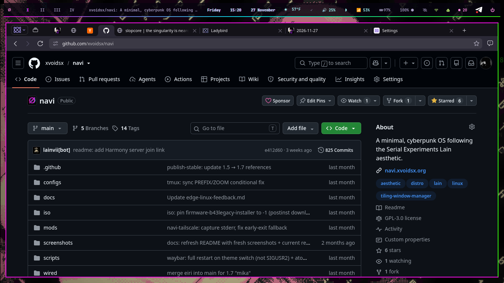

now | blog | wiki | recipes | bookmarks | contact | about | donate
* * * back home * * *
a fourth engine enters the race
2026-11-27

There has been a web browser project I have been following with great interest for a long time, and just a few days ago on November 23, Ladybird finally launched its first alpha.
I have been using it quite a bit over the last few days since the alpha launched, and thought I would do a short writeup about it, how I've been finding it so far, and the future of this exciting project - finally, a new independent entry into the browser engine space, separate from Chromium, Gecko, and Webkit.

Ladybird is developed independently by Andreas Kling and the Ladybird team, and while sponsorships from anyone are accepted, these are seen as no-strings-attached donations that give the sponsors no steering power over the future direction of the browser. The Ladybird Browser Initiative is a US 501(c)(3) non-profit that is dedicated to the development and promotion of Ladybird, and its stated mission is to "create an independent, fast, and secure browser that respects user privacy and fosters an open web." This is a mission that I highly respect, and now, we have the first alpha to have a play with.
On first launch, you will be greeted with a screen offering you to set up how you want your browser to look and function, such as horizontal or vertical tabs, or everything on the side, what color theme you'd like to use, and your default search engine. There are a host of search engines to choose from, and "None" is selected by default, empowering you to decide your search provider of choice. Currently, you can select between:
Pretty decent list to choose from, and you can also select Custom search engines... to add more providers of your own.

Ladybird also ships with a content blocker built-in to the settings, with adblock-rust integrated into LibWeb. You can select from several different filter lists, as well as add custom Adblock-compatible rulesets in Custom filters if you choose.
In testing general browsing, I have yet to encounter major breakage on any sites I've checked. YouTube plays fine, scrolling and posting on neighborli and X were fine, working inside of GitHub handled well, and I loaded into my ProtonMail without a hitch. The only issue I've encountered in general browsing in Ladybird thus far is scrolling on some sites are a little janky, but this will get fixed in due time I'm sure. Since first installing Ladybird, I've already received at least one update, and you can easily check for updates by clicking the Ladybird Menu - Help - Check for Updates. You can also simply update it through your package manager if you installed the .deb like I did, with:
doas apt update; doas apt install --upgrade -y ladybird
For an alpha version of the browser, Ladybird has far exceeded my expectations, and I find myself reaching for it quite a bit the last few days for general browsing. It is light, simple, and aiming to be nothing more than a browser that complies to web standards. I look forward to extension support in the future so I use my other favorite tools inside of it, like Proton Pass and other stuff I use in my other favorite browsers.
Ladybird is an important project because it is the only browser engine around that is not a fork of an existing browser engine. Blink, the dominant browser engine that powers Chromium and everything based on it (Chrome, Edge, Brave, Vivaldi, Helium, Yandex, and many more), makes up the majority of web traffic. I love Chromium as a FOSS platform for building so many important things on top of (such as Electron!), but a monoculture is never a good thing, and competition is important for a healthy web and web standards.
Blink itself is a fork of Webkit, the engine powering Safari and every single browser on iOS. Webkit itself is also open-source, but is mostly controlled by Apple. The only other real competition to Webkit and Blink is Gecko, which powers Firefox and its forks (Librewolf, Tor Browser, Mullvad Browser, Waterfox, etc).
Ladybird is powered by LibWeb, its own from-scratch engine. We are even seeing other projects (such as elaris) beginning to be built on top of this base already. It will be very interesting to see what new projects are built on top of the LibWeb/Ladybird base, making a real alternative for people who would rather use something other than Chromium or Firefox forks!
The public release of the Ladybird alpha marks something important: it is the first time a truly new web engine has entered the space in over two decades. Blink itself was not built from scratch as it is a fork of Webkit, and Webkit was a fork of KHTML, originally built by the KDE project.
Ladybird is also free of being a direct product of or majorly funded by ad-tech. Chromium is of course built and mostly funded by Google, Webkit is corporate-backed and Safari itself also has a major deal with Google ($20 billion per year) to be included as the default search engine in the browser, and of course, Firefox is majorly funded by Google as well, to the tune of ~$500 million per year to be the default search engine.
If you want to help Ladybird, there are a few things you can do. You can give it a download and use it, and report bugs on the issue tracker. If you want to financially support Ladybird, you can also become a sponsor or give a one-time donation on the contribute page of the Ladybird website.
If you want to try out Ladybird on your own machine, you easily can get the alpha up and running on Linux distributions and macOS. Windows support is planned in the future, and I believe a mobile version is also planned when the desktop version is stable, so there is a lot to look forward to for the future of Ladybird. Head to the link below and give it a try - if you're on Linux, you can either grab the Flatpak, the .deb or .rpm packages, or the AppImage, whatever you're most comfortable with. If you're on macOS, just grab the .dmg package, install it, and off you go.